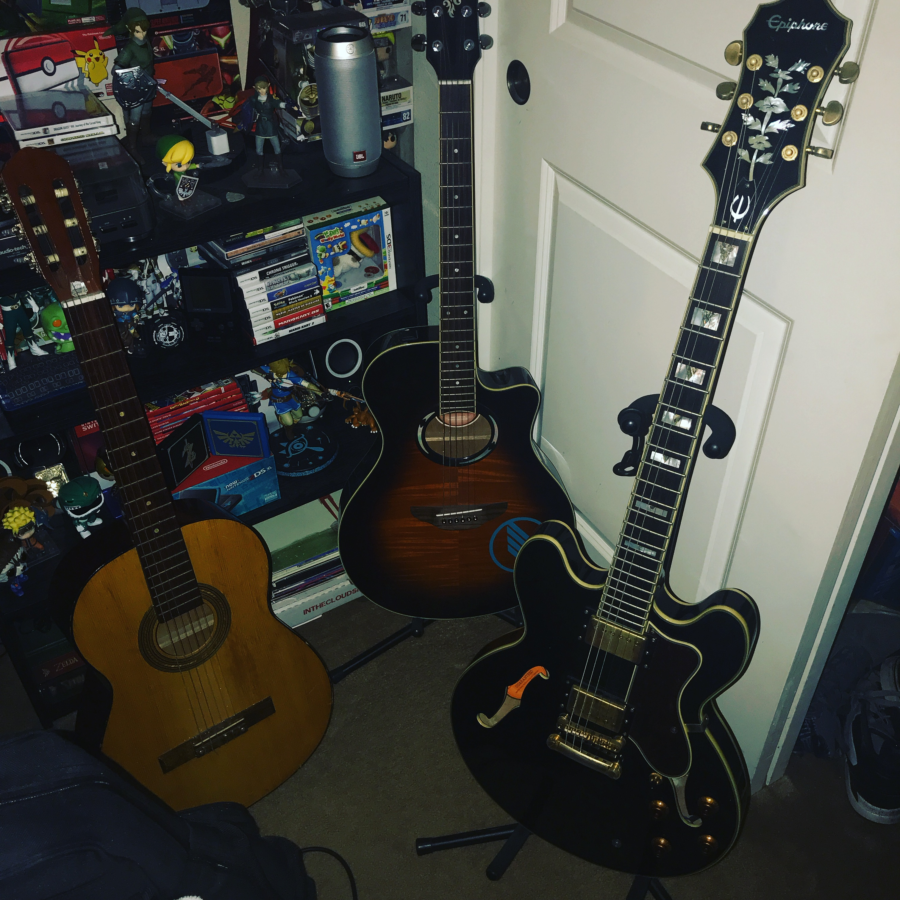
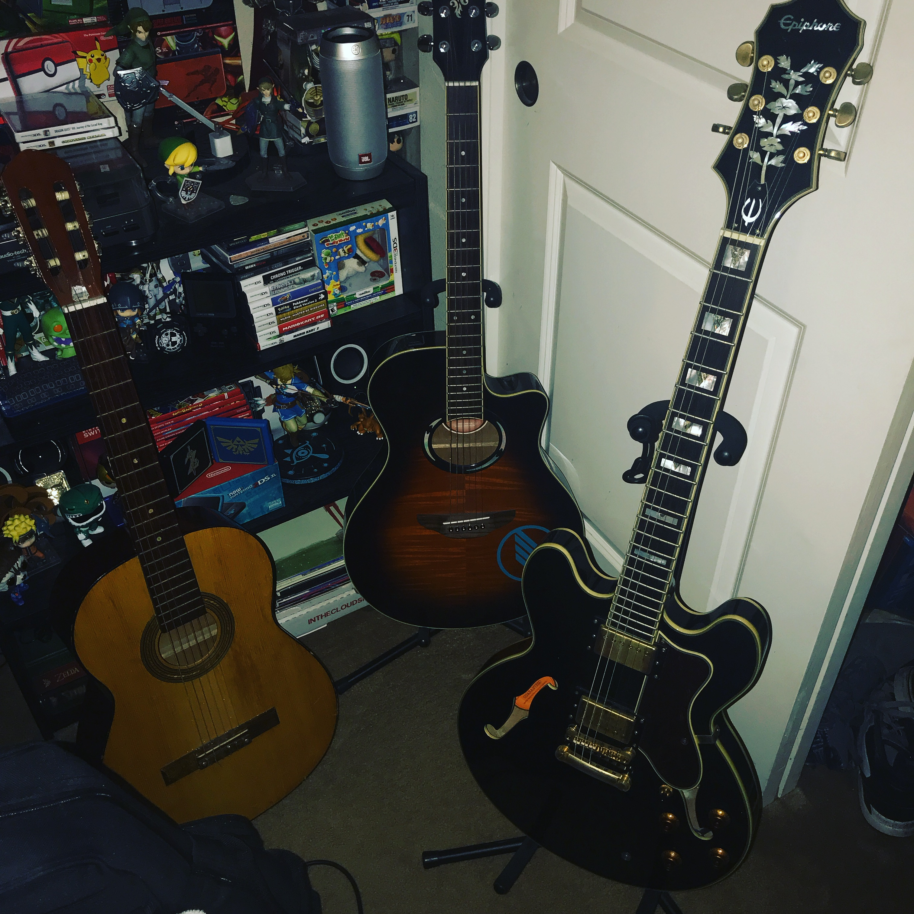

Lab 13: Typography I
Big Idea
For this lab we had to create a webpage and we had to make sure it was excatly or close to the sameone that we decided to go based on.
Difficulties
We had a lot of difficulties with this lab in general. We spent a couple days working on lab 13 this was actually a really complicated lab for us and we had alot of truble with the centering and the placement of the background image.
Results
You are looking at my resutls. Its very interesting how after this lab its very interesting how our webpage came out we are so proud of our work and what the final results were at the end of this assingment.